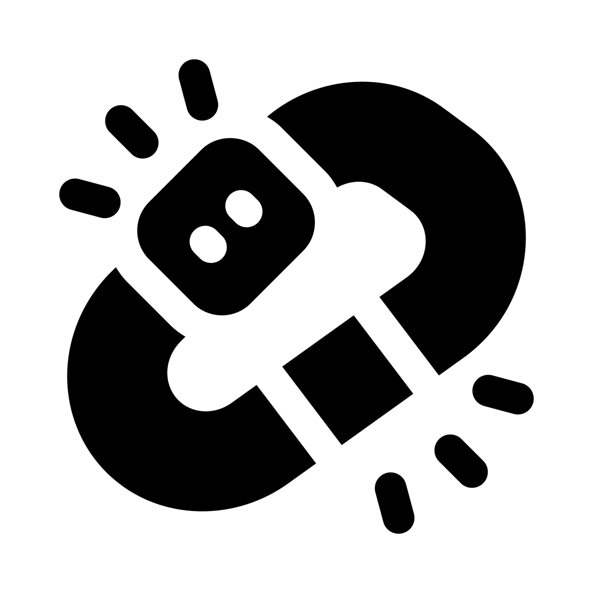
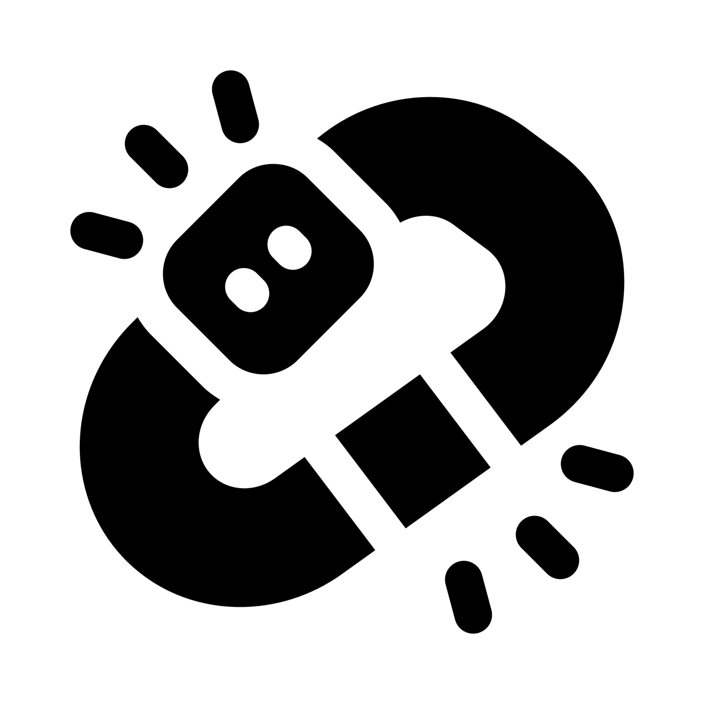

Learning more about Meachine Learning techniques in India by jaining this channel
Auther Name
11 Febuary | 6 min read

 

Blog-I is a website which lets you submit an article which upon approval will be up on our website and you can get a good amount of reach from here!
A personal blog is an online platform where individuals share their thoughts, experiences, interests, and hobbies. It serves as a personal diary or commentary in a digital format, often written in a conversational and informal tone.
In communications and information processing, code is a system of rules to convert information—such as a letter, word, sound, image, or gesture—into another form, sometimes shortened or secret, for communication through a communication channel or storage in a storage medium. An early example is an invention of language, which enabled a person, through speech, to communicate what they thought, saw, heard, or felt to others. But speech limits the range of communication to the distance a voice can carry and limits the audience to those present when the speech is uttered. The invention of writing, which converted spoken language into visual symbols, extended the range of communication across space and time. The process of encoding converts information from a source into symbols for communication or storage. Decoding is the reverse process, converting code symbols back into a form that the recipient understands, such as English or/and Spanish. One reason for coding is to enable communication in places where ordinary plain language, spoken or written, is difficult or impossible. For example, semaphore, where the configuration of flags held by a signaler or the arms of a semaphore tower encodes parts of the message, typically individual letters, and numbers. Another person standing a great distance away can interpret the flags and reproduce the words sent.
In communications and information processing, code is a system of rules to convert information—such as a letter, word, sound, image, or gesture—into another form, sometimes shortened or secret, for communication through a communication channel or storage in a storage medium. An early example is an invention of language, which enabled a person, through speech, to communicate what they thought, saw, heard, or felt to others. But speech limits the range of communication to the distance a voice can carry and limits the audience to those present when the speech is uttered. The invention of writing, which converted spoken language into visual symbols, extended the range of communication across space and time. The process of encoding converts information from a source into symbols for communication or storage. Decoding is the reverse process, converting code symbols back into a form that the recipient understands, such as English or/and Spanish. One reason for coding is to enable communication in places where ordinary plain language, spoken or written, is difficult or impossible. For example, semaphore, where the configuration of flags held by a signaler or the arms of a semaphore tower encodes parts of the message, typically individual letters, and numbers. Another person standing a great distance away can interpret the flags and reproduce the words sent.
In communications and information processing, code is a system of rules to convert information—such as a letter, word, sound, image, or gesture—into another form, sometimes shortened or secret, for communication through a communication channel or storage in a storage medium. An early example is an invention of language, which enabled a person, through speech, to communicate what they thought, saw, heard, or felt to others. But speech limits the range of communication to the distance a voice can carry and limits the audience to those present when the speech is uttered. The invention of writing, which converted spoken language into visual symbols, extended the range of communication across space and time. The process of encoding converts information from a source into symbols for communication or storage. Decoding is the reverse process, converting code symbols back into a form that the recipient understands, such as English or/and Spanish. One reason for coding is to enable communication in places where ordinary plain language, spoken or written, is difficult or impossible. For example, semaphore, where the configuration of flags held by a signaler or the arms of a semaphore tower encodes parts of the message, typically individual letters, and numbers. Another person standing a great distance away can interpret the flags and reproduce the words sent.